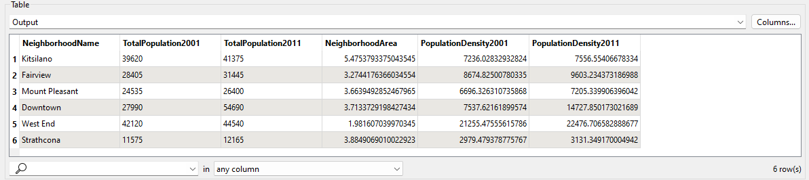
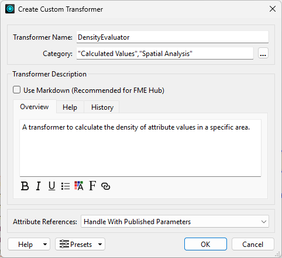
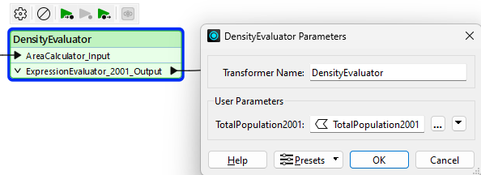

Learning Objectives
After completing this lesson, you’ll be able to:
- Create custom transformers from a sequence of existing transformers.
- Handle attribute references automatically in a custom transformer.
Resources
- Starting workspace
- For Safe Software-hosted training courses, you can find this on your virtual machine here: C:\FMEData\Workspaces\AdvancedDataTransformation\turn-a-reusable-workflow-into-a-custom-transformer.fmw
- Complete workspace
- C:\FMEData\Workspaces\AdvancedDataTransformation\turn-a-reusable-workflow-into-a-custom-transformer-complete.fmw
- VancouverNeighborhoods.kml
- C:\FMEData\Data\Boundaries\VancouverNeighborhoods.kml
Exercise

Sven’s colleague, new to FME, built a workspace that calculates the population density of Vancouver neighborhoods. Their workspace reads neighborhood boundary data and writes population density values for 2001 and 2011. Sven wants to turn that workflow into a custom transformer that calculates the average density of items in any area, so other teams in his organization can reuse it.
In this exercise, you will:
- Create a custom transformer from a sequence of existing transformers.
- Configure the custom transformer to handle attribute references with user parameters.
- Run the workspace to confirm the output is unchanged.
1) Open and Run the Starting Workspace
Your colleague’s workspace calculates population density in persons per square kilometer for the years 2001 and 2011. Seeing that output now gives you a baseline to compare against once the custom transformer is in place.
- Start FME Workbench (2026.2 or later).
- Open your starting workspace at C:\FMEData\Workspaces\AdvancedDataTransformation\turn-a-reusable-workflow-into-a-custom-transformer.fmw.
- Run the workspace and examine the output.
- If an Unexpected Input dialog appears now or on any later run, click OK. It reports that the source dataset contained feature types the workspace read but discarded because they were not defined on the canvas.

The critical components for the custom transformer are the AreaCalculator and the ExpressionEvaluator. The workspace contains two ExpressionEvaluators, one for 2001 and one for 2011, but you only need one of them inside the custom transformer.
- On the canvas, select the AreaCalculator and ExpressionEvaluator_2001, the first of the two ExpressionEvaluators.
- Right-click the selection and choose Create Custom Transformer, or press Ctrl+T.

- Fill in the Create Custom Transformer dialog:
- Transformer Name: DensityEvaluator
- Category: click the ellipsis and select Calculated Values and Spatial Analysis
- Overview:
A transformer to calculate the density of attribute values in a specific area.
- Attribute References: Handle with User Parameters

- Click OK.
- The custom transformer opens in a new tab.
Comparing the two tabs shows you both what sits inside the custom transformer and where it sits in the workspace. Because you chose to handle attribute references with user parameters, FME exposes the processed attribute as a parameter on the new transformer.
- Switch between the DensityEvaluator tab and the Main tab.

- In the Main tab, open the DensityEvaluator parameters.
- FME created a parameter that accepts the attribute you want to process, and set it to the
TotalPopulation2001 attribute.

4) Save and Run the Workspace
The output should match what you saw in step 1, which confirms the custom transformer behaves the same as the two transformers it replaced. This is only the start of building the DensityEvaluator, and you will make it more generic in the upcoming lessons.
- Save the workspace.
- Run the workspace.
- In the output, verify that the density values match the results from step 1.
Additional Resources